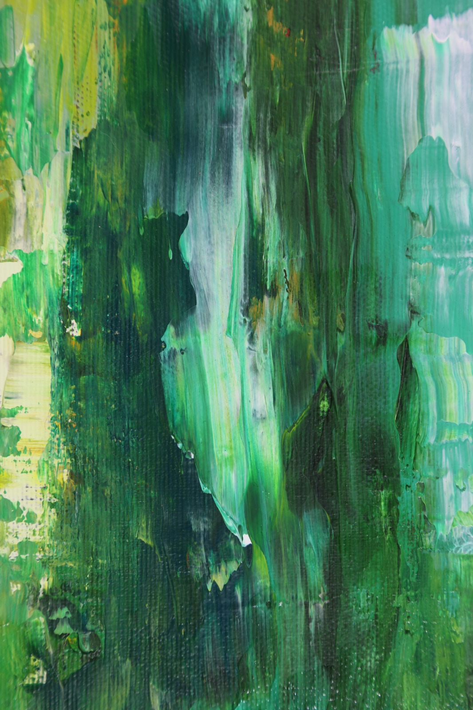

Sem nojinho, vai
Nada pode ser mais perturbador do que algo nojento. Dá calafrios, nosso corpo reage imediatamente e a única opção é nos afastarmos dessa coisa, que pode ser suja, abjeta, ignóbil. O sentimento de repulsa se apresenta rápido, nem dá muito tempo de pensar sobre o encontro com o asqueroso. Sem mais delongas, nossa defesa é a primeira resposta.
Geralmente, ele é engatilhado por algo orgânico, isso é fato: matéria deteriorada, baratas cascudas, chorume. Corpos, também. Não raramente alguns atribuem ao nojo certos comportamentos nauseantes que se tornam estigmatizações, diferenças, políticas de aviltamento ou atitudes agressivas e violentas. Afinal, como poderíamos nos identificarmos com uma barata? Ou a algum comportamento degradante? Nem pensar.
Ou melhor, pensando bem, mesmo submetidos às reações corporais incontroláveis de aversão e distanciamento, o nojo contém uma característica antagônica peculiar: o que nos afasta é capaz, ao mesmo tempo, de nos atrair pelo bizarro que existe em nós. O qual ocultamos, veja bem, pois a vergonha seria insuportável. E, a humilhação, certeira. De natureza animal, somos feitos do mesmo orgânico animalesco possivelmente insalubre; de natureza humana, a consciência produz uma moral sentenciante. O resultado pode ser complexo, mas não impossível de se lidar, ajustando a nossa tolerância com o real e inevitável. Menos moralistas e mais orgânicos. ## Novembro
Novembro
Nesta edição de Novembro, pedimos que vocês falassem do repugnante e inominável nojo abominante em nós. Em “ostras, mangas e pepecas”, questiona-se um nojo quase tabu; No conto “Astros”, uma coincidência feliz acomete o coração mais cético e enjoado da cidade. Em “Michel Foucault e o enigma nietzscheano”, vemos uma análise interessante sobre o nojo enquanto sintoma contemporâneo, causando em nós a sensação de que na vida nada vale a pena ou faz sentido, presos num eterno sentimento blasé; A resenha de “Glicerídeos”, de Junji Ito, analisa um dos contos mais bizarro do mangaká; “Companion of disquiet”, explora a ideia de nojo por meio de um parasita; E, por fim, “A mosca”, versa em perspectiva sonolenta sobre uma metamorfose;
Textos nesta edição
Fala memo!
Eai, td certo? A Nossa Língua quer trocar ideia, mas pra esse papo acontecer cê precisa chegar junto também. Se a revista será feita das inúmeras vozes (dissonantes) da nossa querida Letras, sua presença é vital!
Então, pensa com carinho! Manda no nosso forms aquela rima guardada na gaveta, aquele texto top que cê quer ver o pessoal discutindo, uma análise de um filme mucho loco, um poema esquecido nas notas do cel… Bota pra circular as ideias! Não é tão difícil assim, vai.
Vem que a gente tá te esperando, beletrista!
Para os textos serem publicados em nossa revista, seguimos alguns norteadores éticos para que o respeito e a convivência sejam mantidos. Fora isso, todas as penas valem a pena, se acanha não!
Proibido – Violência ou ataque com base na raça, etnia, nacionalidade, sexo, gênero, identidade de gênero, orientação sexual, religião, deficiências ou doenças; Ataques individuais com constrangimento e degradação; Apologia a grupos de extrema direita política.
Obrigatório – Seguir os prazos sugeridos; e respeitar os pareceres da Equipe Editorial.
Equipe editorial
Cibele M Brotto - Editoração
Alyson Freitas - Revisão
Colaboração:
Attílio Braghetto
Bruna Silva
Cássia Marques
Frederico Nunes
Gabriela Menezes
Guilherme Faber
Livia Bernardes